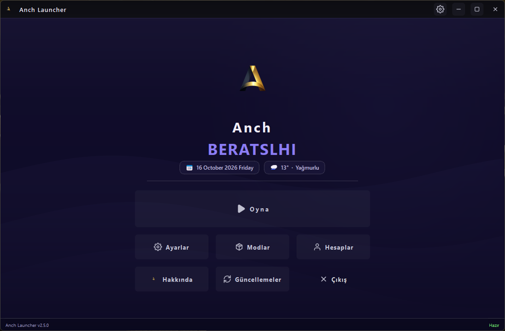

Splash Animasyonu
Uygulama açılırken chroma-key video ile sinematik bir giriş. Video bittiğinde ana ekrana yumuşak bir geçişle oturur — oyun atmosferi daha ilk saniyeden başlar.
Sinematik splash animasyonu, cam efektli Liquid Glass arayüz ve tek tıkla oyun. Hesap bilgilerin yalnızca cihazında, Windows DPAPI ile şifreli tutulur.

Oyunu başlatmak için gereken her şey — sade, hızlı, güvenli.
Uygulama açılırken chroma-key video ile sinematik bir giriş. Video bittiğinde ana ekrana yumuşak bir geçişle oturur — oyun atmosferi daha ilk saniyeden başlar.
Apple'ın visionOS estetiğinden ilham alan yarı saydam cam katmanlar, canlı bulanıklık ve ışık kırılmaları. Ayarlardan önizleme ile açıp kapatabilirsin.
Resmi Microsoft OAuth akışı ile oturum aç. Erişim ve yenileme jetonların Windows DPAPI ile cihazına şifrelenir; hiçbir sunucuya gönderilmez, hiçbir yere yazılmaz.
Vanilla, Forge ve Fabric sürümlerini tek panelden yönet. Mod paketlerini sürüme göre kur, sil, güncelle — dosya karmaşası yok, tek tıkla oyun.
Clay, Glass ve Liquid olmak üzere üç hazır tema. Her tema; renk paleti, köşe yarıçapı ve cam yoğunluğunu tek seferde değiştirir — arayüzü saniyeler içinde kişiselleştir.
Her açılıştan sonra arka planda sürüm kontrolü yapılır. Yeni sürüm çıktığında arayüzde bir bildirim pill'i belirir; tek tıkla indirilir ve kurulur. Manuel kontrol için Güncelle sayfası her zaman hazır.
Karanlık, sade ve oyun odaklı. Göz yormaz, oyuna odaklanır.
En çok gelen sorular ve kısa cevapları.
Evet. Anch Launcher tamamen ücretsiz ve açık kaynakdır. Ödeme, abonelik veya gizli ücret yoktur. Kaynak kodu GitHub'da herkese açıktır.
Evet. Microsoft girişi resmi OAuth akışıyla yapılır. Erişim jetonun Windows DPAPI ile yalnızca senin cihazında şifrelenir; hiçbir sunucuya, hiçbir loga gönderilmez. Launcher hiçbir kişisel veriyi toplamaz.
Hayır. Kurulum dosyası yalnızca GitHub Releases üzerinden dağıtılır ve indirme sayfasındaki SHA-256 özetiyle bütünlüğünü doğrulayabilirsin. Kaynak kodu açık olduğu için kodu kendin inceleyebilirsin. Windows Defender uyarısı verirse "Daha fazla bilgi → Yine de çalıştır" diyebilirsin — bu, imzalı olmayan uygulamalar için standart bir uyarıdır.
Vanilla, Forge ve Fabric. 1.8'den güncel sürümlere kadar geniş bir yelpazeyi destekler. Sürüm seçiciden istediğin sürümü indirip oynayabilirsin.
Windows 10 veya 11 (64-bit), en az 4 GB RAM (8 GB önerilir), OpenGL 3.2+ destekli bir ekran kartı ve yaklaşık 500 MB boş disk alanı. Java, launcher tarafından otomatik kurulur — ayrıca kurmana gerek yoktur.
Quick Fix bölümüne bak. Sorun sürerse GitHub Issues üzerinden log dosyanla birlikte rapor aç — mümkün olan en kısa sürede dönüş yapılır.
Launcher açılışta otomatik kontrol eder. Yeni sürüm varsa ana ekranda bir bildirim pill'i belirir; tıklayarak indirirsin. Elle kontrol için: Güncelle sayfasını aç, "Şimdi Kontrol Et" butonuna bas.
Sık karşılaşılan sorunlar ve saniyeler içinde çözüm yolları.
Java sürümü launcher tarafından otomatik seçilir. Elle denemek için: Ayarlar → Java → "Otomatik seç" kapat, Java 17 veya 21 seç. Ekran kartı sürücünü güncelle.
Saat ve saat diliminin doğru olduğundan emin ol (Ayarlar → Saat ve dil). Tarayıcı çerezlerini temizle. Hâlâ olmuyorsa launcher'ı yönetici olarak çalıştır.
Ayarlar → Performans → "Arka plan animasyonları" kapat. Liquid Glass efekti GPU'yu meşgul ediyorsa Ayarlar → Tema → "Glass" veya "Clay" temasına geç.
Modun, oynadığın Minecraft sürümü ve loader ile uyumlu olduğundan emin ol. Forge modları Fabric ile çalışmaz. Uyumsuz modu kaldır, oyunu bir kez başlat, sonra tekrar ekle.
Uygulama imzalı olmadığı için standart bir uyarıdır. "Daha fazla bilgi → Yine de çalıştır" de. Alternatif olarak: Defender → Virüsten koruma ayarları → Uygulama ve klasör denetimi → Kaldır → AnchLauncherSetup.exe'yi ekle.
Diğer Minecraft launcher'ları (TLauncher, MultiMC vb.) açıkken kurulum yapma. Kurulum dizininde Türkçe karakter veya boşluk olmamasına dikkat et (örn: C:\Games\AnchLauncher). Sonra tekrar dene.
Windows 10/11 (64-bit) · Ücretsiz · Açık kaynak
AnchLauncherSetup-2.5.0.exe indir.Kurulum dosyası yalnızca GitHub Releases üzerinden dağıtılır. SHA-256 ile bütünlüğünü doğrulayabilirsin.